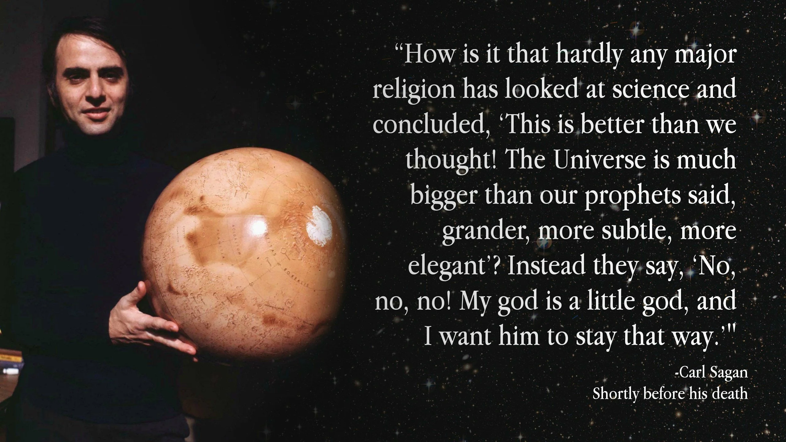
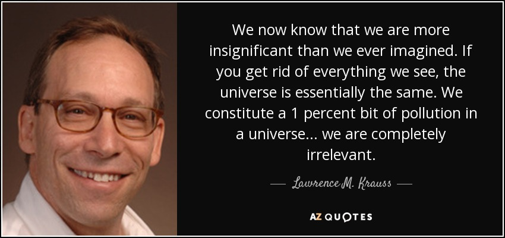
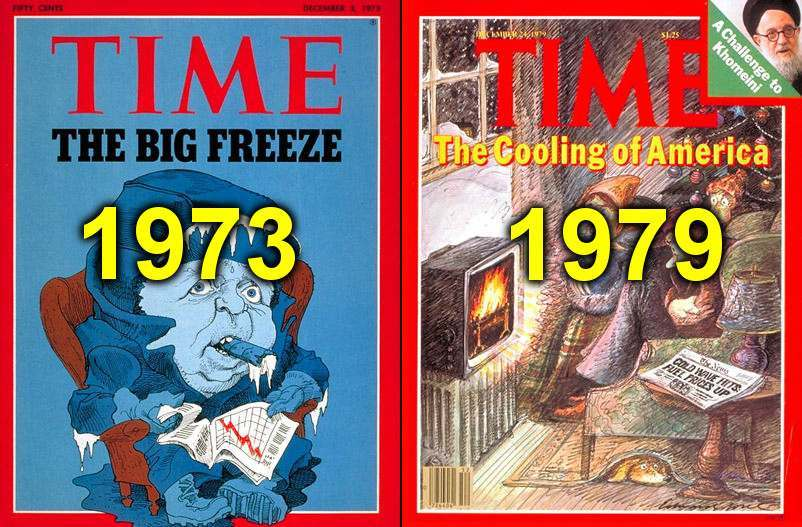
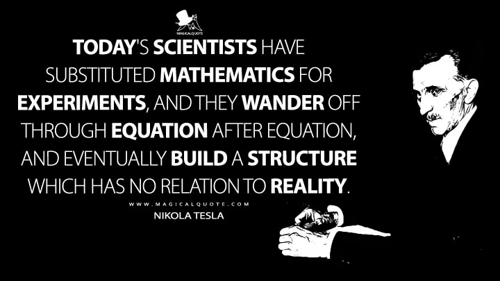

Why Would They Lie About the Earth?
My approach to this eternal question.
Islamic Perspective
The sheer amount of Quran verses that describe the world as stationary and flat under a container, yet never describe it as a spinning globe, and the constant reminder that nature is a sign for humanity gives way for the denial of any of these things to constitute denying the speech of Allah and to promote uncertainty.
The one who went to the 7th heaven and saw everything in it and then beyond ﷺ, taught the Sahaba and they’ve related it to us for a reason; it is not useless information (for those who say that “this topic is a waste of time”).
Narrated 'Umar:
One day the Prophet stood up amongst us for a long period and informed us about the beginning of creation (and talked about everything in detail) till he mentioned how the people of Paradise will enter their places and the people of Hell will enter their places. Some remembered what he had said, and some forgot it.
The salaf relating these truths to us makes them seen as scientifically-illiterate people who were more backwards than the Greek pagans. Some may posit that they spoke whatever they heard or that they made it up based on what was assumed at the time, which still makes them backwards.
Kufr bil-Taghut
NASA is a taghut claiming to have ilm al ghayb so it must be disbelieved in and rejected. They claim to have knowledge of the unseen and Allah rebuked them.
But NASA will tell you everything that occurred since the beginning of time.
Nobody is ever taught in school that these are just theories, not laws or principles, and we are definitely not taught how these are proven to be true, simply because there is no proof and the best way to brainwash people is to constantly repeat it. Before you could even talk, a hanging mobile of the solar system was over your crib, and astronauts were on Sesame Street, and the Universal Studios globe was before every movie.
Scientism
When evolution theory was propagated, it brought a huge wave of distrust in religion. The same thing happened with the globe deception since every religion teaches a flat earth, in the same way there was a wave of disbelief in the end of times after the idea that matter cannot ever be destroyed was invented.
When Freemasonry took off, the religions of regions lost their influence. The purpose of occultism is to turn man into god through worship of the intellect.
Video walking through how science has been misrepresented and has a deep occult history
They engineered society to hate religion on the basis of this fake science and humanism. Now, the modern tafseers and translations are based on what NASA claims. Some of them blatantly translate things wrong. They influence our interpretation of the Quran, so if we refer to them then they’ve got us in a mental chamber.

This is blind obedience, and young people today are scrapping for non-existent “scientific miracles” as a reason to believe in Islam since public schools brainwashed them into scientism.
The Hoaxes
Every atheist lie relies on a heliocentric globe to work. You cannot materialistically explain away a flat world model with the big bang and “gravity.” The more millions and billions of years they can add into the timeline of existence, the easier it is to explain away God and make everything happen by pure chance.
Freudian pseudo-psychology paired with evolution has reduced us to nothing more than advanced animals driven solely by neurochemicals as the basis for all emotions. You have no higher purpose other than working and consuming until death.

The earth is literally tens of thousands of times bigger than we think so clearly many other worlds and, with it, vast natural resources are being hidden. People used to have limited access to travel so they didn’t know about America but we also have limited access and don’t know about what’s beyond.
“You can’t explore anything because everything has been discovered.” Many of their lies like climate change and running out of resources rely on a limited globe but Allah did not create a world that cannot sustain its hosts.
They’ve always used petroleum scarcity as a scare tactic against people and now they’re making us think it’s ruining the environment so we need to give up freedoms for them to “save the planet.” Even putting aside how nonsensical it is to suggest that CO2, the food for all plant life, is destroying the world, we were told just decades prior that there was an ice age coming.
Whole generations were duped then switched into believing the opposite but just as paranoid of a hoax. Children’s experiments show that melting ice caps won’t raise sea levels, which is not even needed since every beach is right where it always was.

The demand for blind obedience to scientific matters which are supposed to be determined in a zetetic approach yet contradict every observable and measurable method and are not detectable through any natural sense is a fundamental for the removal of free thinking on the individual basis and the communal basis when everyone is involved in the same trauma-based mind control since birth.
Science is not a man with a voice, nor is science a democracy, nor is it a system that requires consensus or majority rule. Science cannot say something. Scientists can say something and the very definition of one has been twisted to mean an individual with a certificate demonstrating their brainwashing.
